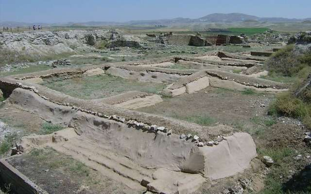

मुखपृष्ठ › प्रांत-दर-प्रांत घूमने की जगहें › अंकारा
Kültür Varlıkları गाइड में अंकारा की 36 जगहें हैं: 29 संग्रहालय, 4 पुरातात्विक स्थल, 2 क़िला और ऐतिहासिक इमारत, 1 धार्मिक इमारत। नीचे मुख्य आकर्षण, नक्शा और पूरी सूची है।
⭐ मुख्य आकर्षण

1 · अंकारा · संग्रहालयअनातोलियाई सभ्यता संग्रहालय
अनातोलियाई सभ्यता संग्रहालय अंकारा क़िले की तलहटी में 15वीं सदी के पुनर्स्थापित महमूद पाशा बाज़ार और कुर्शुनलु हान में स्थित है। गणराज्य के शुरुआती वर्षों से जुड़ी…

2 · अंकारा · संग्रहालयगोर्डियन संग्रहालय
गोर्डियन संग्रहालय पोलातली के पास यास्सीह्यूयुक गाँव में, फ़्रीजियाई राज्य की राजधानी गोर्डियन के बगल में है — यह पौराणिक राजा मिडास का नगर है और वह जगह भी जहाँ कहा…

3 · अंकारा · संग्रहालय15 जुलाई लोकतंत्र संग्रहालय
15 जुलाई लोकतंत्र संग्रहालय हालिया इतिहास का एक संग्रहालय है, जो 15 जुलाई 2016 की रात तख़्तापलट की कोशिश और उस रात की घटनाओं के दस्तावेज़ीकरण के लिए बनाया गया।…
🗺 नक्शे पर
📍 सभी जगहें (36)
संग्रहालय (29)
अनातोलियाई सभ्यता संग्रहालयसंग्रहालयगोर्डियन संग्रहालयसंग्रहालय · UNESCO15 जुलाई लोकतंत्र संग्रहालयसंग्रहालय अलागोज़ मुख्यालय संग्रहालयसंग्रहालय
अलागोज़ मुख्यालय संग्रहालयसंग्रहालय अल्तिनकोय खुला संग्रहालयसंग्रहालय
अल्तिनकोय खुला संग्रहालयसंग्रहालय अनातोलिया जीवंत गाँव खुला संग्रहालयसंग्रहालय
अनातोलिया जीवंत गाँव खुला संग्रहालयसंग्रहालय अंकारा खिलौना संग्रहालयसंग्रहालय
अंकारा खिलौना संग्रहालयसंग्रहालय अनितकबीरसंग्रहालय
अनितकबीरसंग्रहालय अतातुर्क आवास और रेलवे संग्रहालयसंग्रहालय
अतातुर्क आवास और रेलवे संग्रहालयसंग्रहालय बेयपाज़ारी जीवंत संग्रहालयसंग्रहालय
बेयपाज़ारी जीवंत संग्रहालयसंग्रहालय जेरमॉडर्नसंग्रहालय
जेरमॉडर्नसंग्रहालय गणराज्य संग्रहालयसंग्रहालय
गणराज्य संग्रहालयसंग्रहालय एरिमतान पुरातत्व और कला संग्रहालयसंग्रहालय
एरिमतान पुरातत्व और कला संग्रहालयसंग्रहालय नृवंशविज्ञान संग्रहालयसंग्रहालय
नृवंशविज्ञान संग्रहालयसंग्रहालय गोकयाय फ़ाउंडेशन शतरंज संग्रहालयसंग्रहालय
गोकयाय फ़ाउंडेशन शतरंज संग्रहालयसंग्रहालय अंकारा वायुसेना संग्रहालयसंग्रहालय
अंकारा वायुसेना संग्रहालयसंग्रहालय स्वतंत्रता संग्राम संग्रहालयसंग्रहालय
स्वतंत्रता संग्राम संग्रहालयसंग्रहालय एमकेई उद्योग और प्रौद्योगिकी संग्रहालयसंग्रहालय
एमकेई उद्योग और प्रौद्योगिकी संग्रहालयसंग्रहालय ओडीटीयू विज्ञान और प्रौद्योगिकी संग्रहालयसंग्रहालय
ओडीटीयू विज्ञान और प्रौद्योगिकी संग्रहालयसंग्रहालय चित्रकला और मूर्तिकला संग्रहालयसंग्रहालय
चित्रकला और मूर्तिकला संग्रहालयसंग्रहालय टीसीडीडी खुला भाप इंजन संग्रहालयसंग्रहालय
टीसीडीडी खुला भाप इंजन संग्रहालयसंग्रहालय मालिकोय रेलवे स्टेशन संग्रहालयसंग्रहालय
मालिकोय रेलवे स्टेशन संग्रहालयसंग्रहालय तुर्की वैमानिकी संघ संग्रहालयसंग्रहालय
तुर्की वैमानिकी संघ संग्रहालयसंग्रहालय उलुजानलार कारागार संग्रहालयसंग्रहालय
उलुजानलार कारागार संग्रहालयसंग्रहालय चेंगेलहान रहमी कोच संग्रहालयसंग्रहालयजेंडरमेरी संग्रहालयसंग्रहालयकाहरामानकाज़ान 15 जुलाई शहीद और लोकतंत्र संग्रहालयसंग्रहालयमेहमत आकिफ़ एरसोय साहित्य संग्रहालय पुस्तकालयसंग्रहालयएमटीए शेहवार प्राकृतिक इतिहास संग्रहालयसंग्रहालय
चेंगेलहान रहमी कोच संग्रहालयसंग्रहालयजेंडरमेरी संग्रहालयसंग्रहालयकाहरामानकाज़ान 15 जुलाई शहीद और लोकतंत्र संग्रहालयसंग्रहालयमेहमत आकिफ़ एरसोय साहित्य संग्रहालय पुस्तकालयसंग्रहालयएमटीए शेहवार प्राकृतिक इतिहास संग्रहालयसंग्रहालयपुरातात्विक स्थल (4)
 अंकारा रोमन थिएटरपुरातात्विक स्थल
अंकारा रोमन थिएटरपुरातात्विक स्थल ऑगस्टस मंदिरपुरातात्विक स्थल
ऑगस्टस मंदिरपुरातात्विक स्थल जूलियोपोलिस क़ब्रिस्तानपुरातात्विक स्थल
जूलियोपोलिस क़ब्रिस्तानपुरातात्विक स्थल अंकारा रोमन स्नानागारपुरातात्विक स्थल
अंकारा रोमन स्नानागारपुरातात्विक स्थलक़िला और ऐतिहासिक इमारत (2)


धार्मिक इमारत (1)

🧭 इस प्रांत वाले मार्ग
🏺 संबंधित सभ्यता गाइड
अनातोलिया के पहले गाँव: आशिक्ली ह्योयुक और चाताल्ह्योयुकई.पू. 8300–5700 · नवपाषाणहित्ती और उत्तर-हित्ती राज्यई.पू. 1650–700 · कांस्य और लौह युगफ़्रीजियाई और लीडियाईई.पू. 9वीं–6ठी शताब्दी · लौह युगगैलीपोली से गणराज्य तक1915 – 1923सेल्जुक और बेयलिक1071 – 15वीं शताब्दीरोमन काल में अनातोलियाई.पू. 133 – ईसवी चौथी शताब्दी